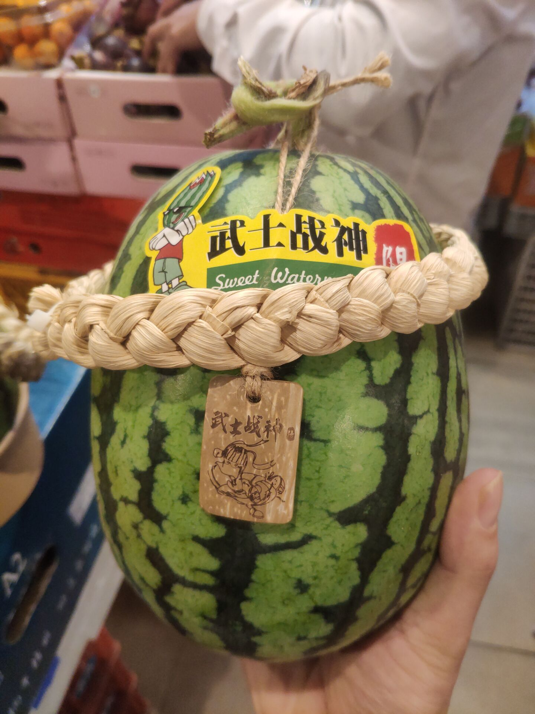

——妹妹并不喜欢紫色，妹妹只是喜欢哥哥。
忙完一天，去楼下买点东西，去了面包店，买了打折商品，去了水果店，买了一些苹果和沃柑。
水果店新上了一种西瓜。
盛惠58一个（
听闻非常非常好吃，但是鉴于我还处于灵活就业状态，就暂时不买了，迟点一定要搞一个来啃。
回到家里，坐在地板上，吃了一个沃柑，沃柑很甜。
看着沃柑上白色的络，我突然想起了一位朋友。
这位朋友稍微有点“强迫症”，剥桔子的时候会清理干净那些白色的络。
有机会让这位朋友帮我剥桔子。
突然想起一句诗句：“纤手破新橙”，不禁笑出声来。
全诗如下
并刀如水，吴盐胜雪，纤手破新橙。锦幄初温，兽香不断，相对坐调笙。
低声问：向谁行宿？城上已三更。马滑霜浓，不如休去，直是少人行！
嘿嘿嘿
呼，太难啦。
我只是想让你看看。
究竟只能被迫放弃自己喜欢的东西，我很伤心，很难受。
为自己的软弱，为自己的无能。
我恨我自己。